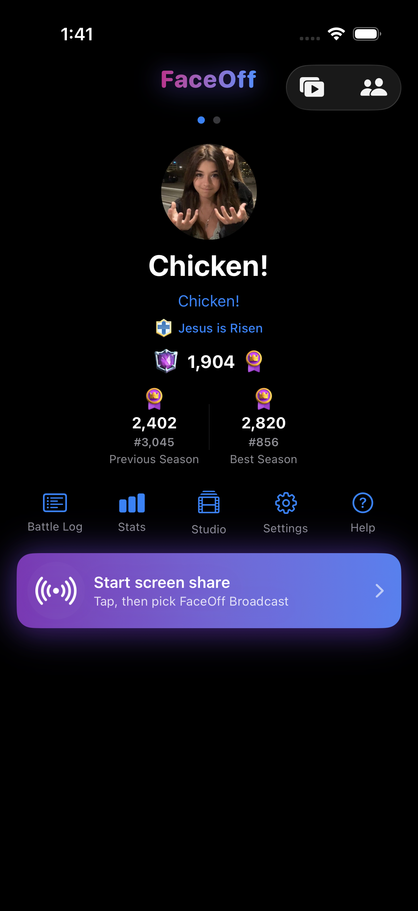
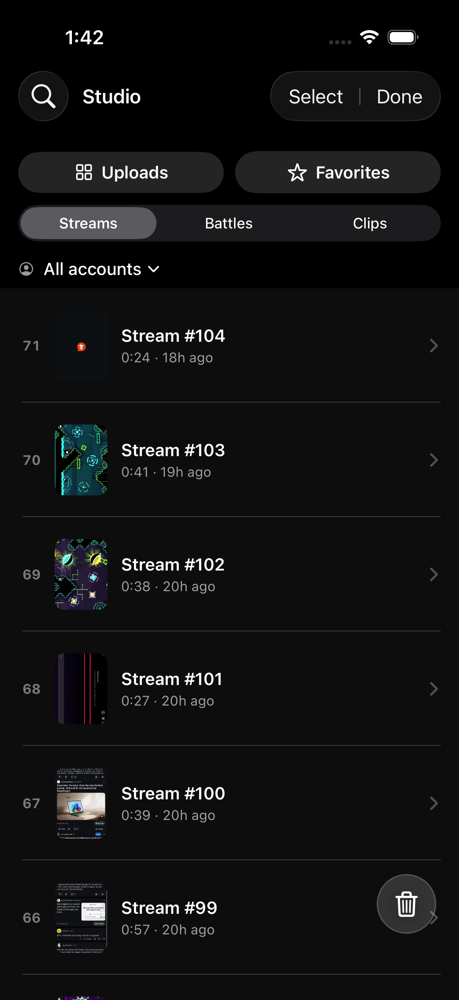
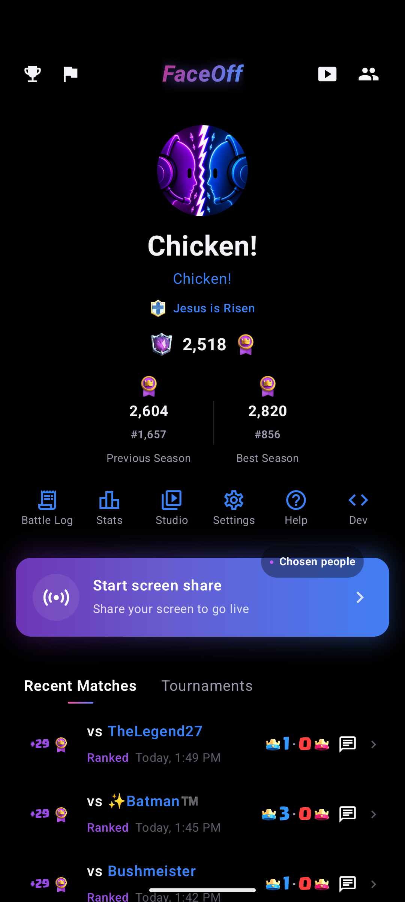
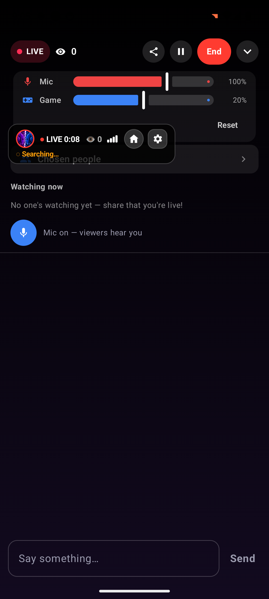

I build and evaluate language models and ship production ML systems end-to-end. My recent work includes
Reviser, an edit-based language model, and FaceOff, a native cross-platform real-time streaming and voice platform.
I’m a research engineer focused on language-model architecture, particularly alternatives to standard
left-to-right generation. I built Reviser end-to-end at 100M and 300M parameters, including its architecture,
training pipeline, inference system, evaluation infrastructure, and interactive trajectory-analysis tools.
I also founded and solo-built FaceOff, a real-time social and streaming platform for Clash Royale. It combined
native SwiftUI and Jetpack Compose applications, a FastAPI/PostgreSQL backend, LiveKit/WebRTC streaming and
voice, computer-vision opponent matching, replay processing, authentication, push notifications, moderation,
localization, and production infrastructure.
I completed an M.S. in Computer Science with a Graduate Certificate in Artificial Intelligence at CU Boulder
and a B.S. in Mathematics at Indiana University East, both with a 4.0 GPA.
Open Roles
Seeking ML Research Engineer and ML Engineer roles involving language-model architecture, training,
evaluation, and production ML systems. Bay Area preferred; open to remote roles and relocation.
Projects
Reviser
Solo research project · Dec 2025–May 2026
An edit-based language model that generates text by applying Insert, Move, and
Stop actions to a mutable token canvas rather than appending tokens strictly from left to right.
Built the model architecture, data pipeline, training loop, inference system, evaluation stack, and visualization tools end-to-end in PyTorch.
Ran 3,000-sample C4 pairwise LLM-judge arenas; achieved 61.3%/54.4% vs matched autoregressive baselines at 100M/300M parameters and 85.9%/78.3% vs SEDD/MDLM.
Developed obfuscation-to-restoration supervision and canvas-state conditioning to teach explicit revision behavior.
Released code, checkpoints, a paper, and interactive trajectory explorers; filed a U.S. provisional patent application.
Editing trajectory demo from a real Reviser response: the canvas is incrementally revised via cursor actions.
Interactive trajectory explorer: 300M · 100M — play, scrub, and step through real generations.
FaceOff
Founder & ML/Systems Engineer · May 2026–Sep 2026
A real-time social and streaming platform for Clash Royale, solo-built end-to-end across native mobile
applications, backend services, computer vision, and real-time media infrastructure.
Built native SwiftUI iOS and Jetpack Compose Android applications against a shared FastAPI/PostgreSQL backend, including live broadcasting, watching with chat, social messaging and calls, Community posts, Studio media management, multi-account profiles, and replay-backed battle history.
Built a masked-template-matching and RapidOCR pipeline over ReplayKit and MediaProjection capture that recognized matched opponents and automatically connected them through LiveKit voice rooms; reduced cross-device detection skew from 14 seconds to sub-second.
Engineered hardware H.264 screen sharing at up to 1080p/60 fps, LiveKit/WebRTC media transport, a lower-resolution simulcast fallback, zero-re-encode recording with an ffmpeg CFR fallback, and automatic replay clipping aligned to Supercell battle timestamps.
Implemented Apple/Google authentication, APNs/VoIP and FCM push, moderation, privacy and retention controls, account verification, rate limiting, production deployment, monitoring, backups, and release/rollback infrastructure.
Localized the iOS, Android, backend, errors, and notifications across nine languages and visually validated 387 locale/screen states, including Arabic right-to-left layouts.

iOS profile & broadcast

iOS Studio

Android profile & matches

Android live stream
The GPT Transformer: A Complete Mathematical and Architectural Analysis
Solo research project · Mar 2025–Jun 2025
Technical analysis of GPT forward/backward passes with full gradient derivations and implementation-level
checks connecting core theory to practical training behavior.